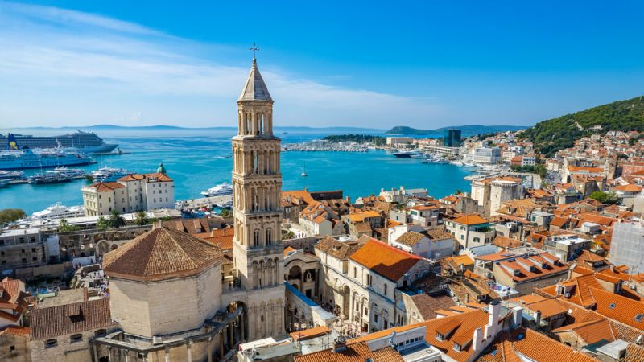
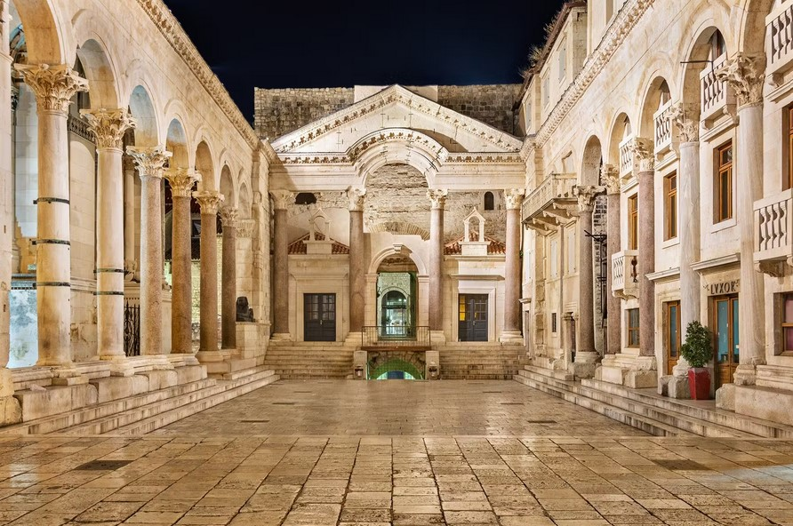
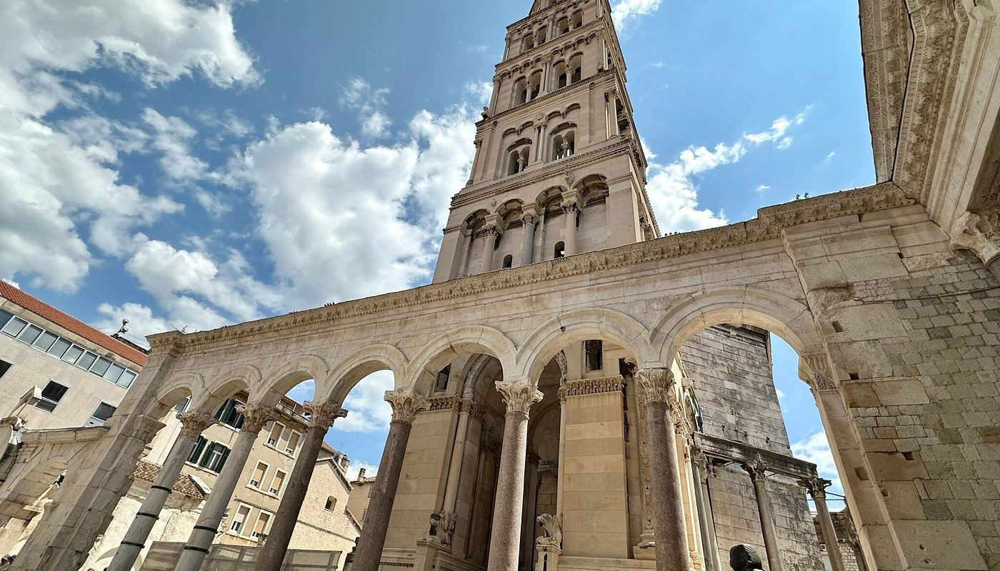
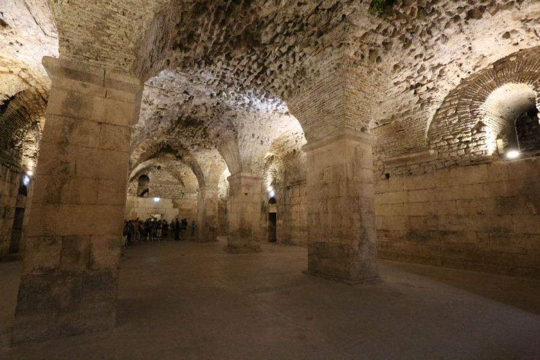
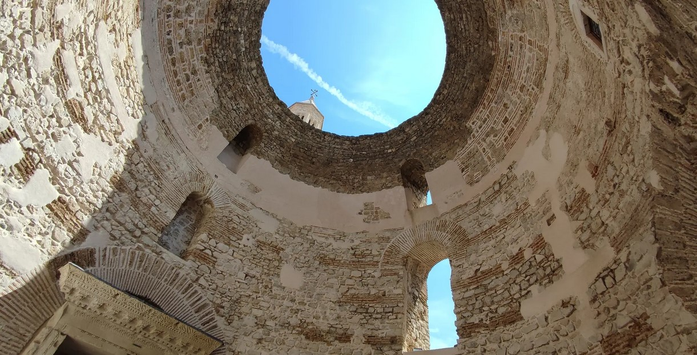
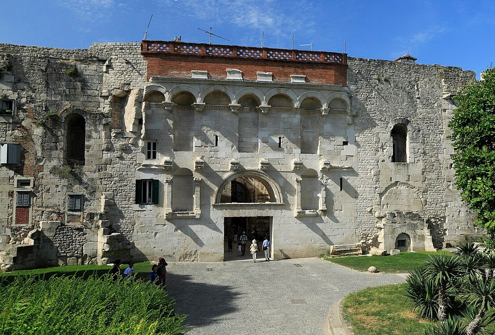
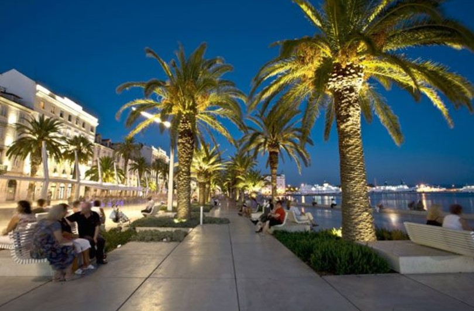

SPLIT 2025
Ein Spaziergang durch die Geschichte
Erlebe das UNESCO Weltkulturerbe!

Diokletianpalast
Antikes Rom voll modernem Leben.
Mehr Information

Wegbeschreibung
Kathedrale von Split
Zeuge antiker Architektur
Mehr Information

Wegbeschreibung
Die Diokletian Keller
Mysteriöse Kellergewölbe, herrlich beleuchtet.
More Information

Wegbeschreibung
Das Vestibulum
Ein statisches Wunderwerk, bestaune die antike Baukunst.
More Information

Wegbeschreibung
Goldenes Tor
Finde die engen Gassen (und die coolen Bars) in diesem Stadtviertel.
More Information

Wegbeschreibung
Split Promenade
Bestaune die alte Stadtmauer und nimm einen Drink in einem der gemütlichen Cafes.

Wegbeschreibung
Zurück